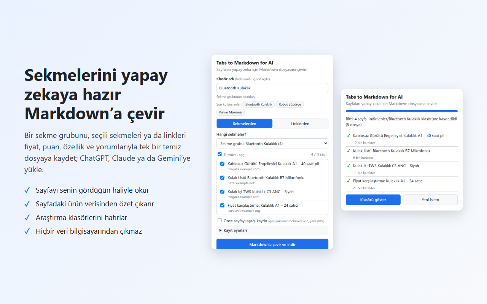
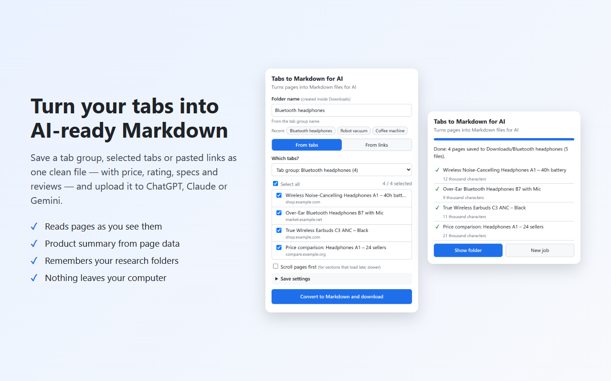

Tabs to Markdown for AI
Firefox ve Chrome için tarayıcı eklentisi. Açık sekmeleri, bir sekme grubunu ya da yapıştırdığın linkleri temiz Markdown dosyalarına çevirir. Bu dosyaları ChatGPT, Claude, Gemini, DeepSeek, Qwen ya da başka bir yapay zeka asistanına yükleyebilirsin.

Ne yapar?
- Sekmelerden: Bir sekme grubunu, seçtiğin sekmeleri, penceredeki tüm sekmeleri ya da yalnızca açık sekmeyi okur.
- Linklerden: Yapıştırdığın linkleri arka planda açar, okur ve kapatır.
- Kayıt: Sekme grubu varsa grup adıyla bir klasöre kaydeder. Grup yoksa klasör açmadan doğrudan İndirilenler'e tek dosya kaydeder.
- Ürün özeti: Sayfada düzenli ürün verisi varsa fiyat, stok, puan, satıcı, özellikler ve yorum örneklerini tabloya koyar.
- Temiz metin: Menü, çerez bandı, reklam ve resimleri atar.
- Hatırlayan klasörler: Önceki bir araştırmaya yeni sekme eklediğinde aynı klasörü önerir.
- 11 dil: Arayüz ve dosyalar tarayıcının dilinde olur.
Gizlilik
Her şey bilgisayarında olur. Eklentinin sunucusu yoktur, hiçbir yere veri göndermez, kullanım istatistiği toplamaz. Ayrıntılar: Gizlilik politikası.
Durum
Firefox için yayında: Firefox Eklentileri. Chrome Web Mağazası'na gönderilmesi hazırlanıyor. Kaynak kodu ve paketler: GitHub (MIT lisansı), İndir.
İletişim
Bora Şavkar (ByBora) · bybora.apps@gmail.com
Tabs to Markdown for AI
A browser extension for Firefox and Chrome. It turns open tabs, a tab group or pasted links into clean Markdown files you can upload to ChatGPT, Claude, Gemini, DeepSeek, Qwen or any other AI assistant.

What it does
- From tabs: a tab group, the tabs you selected, all tabs in the window, or only the current tab.
- From links: paste links; each one is opened in the background, read and closed.
- Saving: with a tab group, files go to a folder named after the group. Without one, a single file is saved directly to Downloads.
- Product summary: when a page contains structured product data, price, availability, rating, seller, specifications and sample reviews are put in a table.
- Clean text: menus, cookie banners, ads and images are removed.
- Folders that remember: add a new tab to an earlier research and the same folder is suggested.
- 11 languages: the interface and the files follow your browser language.
Privacy
Everything happens on your computer. The extension has no server, sends no data anywhere and contains no analytics. Details: Privacy policy.
Status
Available for Firefox: Firefox Add-ons. Submission to the Chrome Web Store is being prepared. Source code and packages: GitHub (MIT License), Download.
Contact
Bora Şavkar (ByBora) · bybora.apps@gmail.com